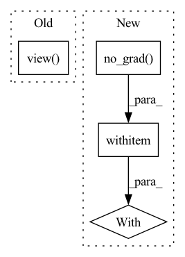

Pattern ID :1850
Before Change
with torch.no_grad():
means, buckets, dists = kmeans(x, means, training=self.training, init=not self.initted)
indices = distribution(dists, window_size)
indices = indices.contiguous().view( *indices.size()[:2], -1)
routed_means = batched_index_select(expand_dim(means, 0, b), buckets)
loss = F.mse_loss(x, routed_means) * self.commitment
After Change
dists, buckets = dists_and_buckets(x, means)
if update_means:
with torch.no_grad() :
means = kmeans_iter(x, means, buckets)
self.new_means = means
routed_means = batched_index_select(expand_dim(means, 0, b), buckets)In pattern: SUPERPATTERN
Frequency: 3
Non-data size: 4
Instances Fragment ID: 13132051
Project Name: lucidrains/routing-transformer
Commit Name: 2042adb06111339b86814500f0c389759b8f6cdf
Time: 2020-05-27
Author: lucidrains@gmail.com
File Name: routing_transformer/routing_transformer.py
M Class Name: Kmeans
N Class Name: Kmeans
M Method Name: forward(3)
N Method Name: forward(3)
M Parent Class: nn.Module
N Parent Class: nn.Module
M File Name: routing_transformer/routing_transformer.py
N File Name: routing_transformer/routing_transformer.py
M Start Line: 396
M End Line: 410
N Start Line: 367
N End Line: 384
Before Change
out = self.trans3(self.dense3(out))
out = self.dense4(out)
out = F.avg_pool2d(F.relu(self.bn(out)), 4)
e = out.view( out.size(0), -1)
out = self.linear(w)
if last:
return out, e
else:After Change
def forward(self, x, last=False, freeze=False):
if freeze:
with torch.no_grad() :
features = self.features(x)
out = F.relu(features, inplace=True)
e = F.adaptive_avg_pool2d(out, (1, 1)).view(features.size(0), -1)
else: Fragment ID: 13132052
Project Name: decile-team/distil
Commit Name: 4108c7fe8b81f9f198410bb6b2598f6833329a5e
Time: 2021-04-29
Author: you@example.com
File Name: distil/utils/models/densenet.py
M Class Name: DenseNet
N Class Name: DenseNet
M Method Name: forward(4)
N Method Name: forward(3)
M Parent Class: nn.Module
N Parent Class: nn.Module
M File Name: distil/utils/models/densenet.py
N File Name: distil/utils/models/densenet.py
M Start Line: 76
M End Line: 83
N Start Line: 121
N End Line: 131
Before Change
self.running_var = (self.momentum * self.running_var) + (1.0-self.momentum) * (x.shape[0]/(x.shape[0]-1)*var)
else:
var = self.running_var
sigma = var.view( [1, self.insize, 1, 1]) .expand_as(x)
if self.non_linear:
den = torch.max(sigma, self.v * x + instance_std(x))
return x / den * self.gamma + self.beta
After Change
if self.training:
var = x.var([0, 2, 3], unbiased=False)
n = x.numel() / x.size(1)
with torch.no_grad() :
self.running_var = exponential_average_factor * var * n / (n - 1)\
+ (1 - exponential_average_factor) * self.running_var
else:
var = self.running_var
Fragment ID: 13132053
Project Name: digantamisra98/evonorm
Commit Name: e64df8c7cc70ac2bb49fc1ec7d479cd1a07ebbef
Time: 2020-04-08
Author: mishradiganta91@gmail.com
File Name: evonorm2d.py
M Class Name: EvoNorm2D
N Class Name: EvoNorm2D
M Method Name: forward(2)
N Method Name: forward(2)
M Parent Class: nn.Module
N Parent Class: nn.Module
M File Name: evonorm2d.py
N File Name: evonorm2d.py
M Start Line: 51
M End Line: 57
N Start Line: 42
N End Line: 60